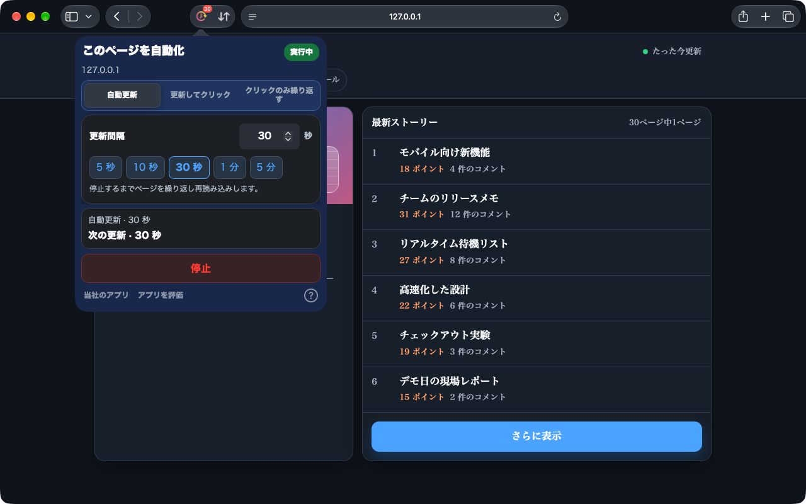
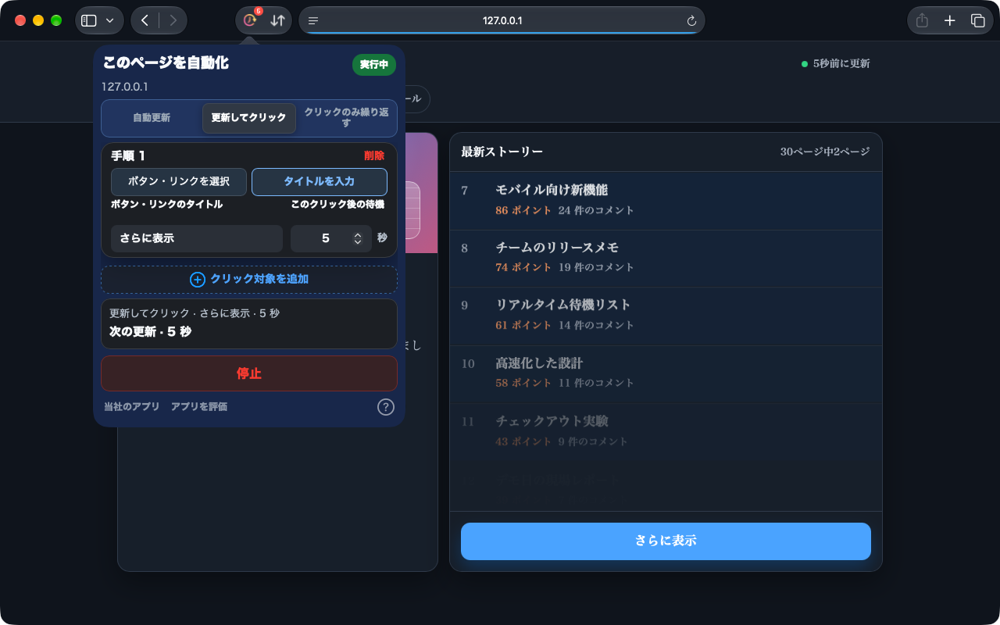
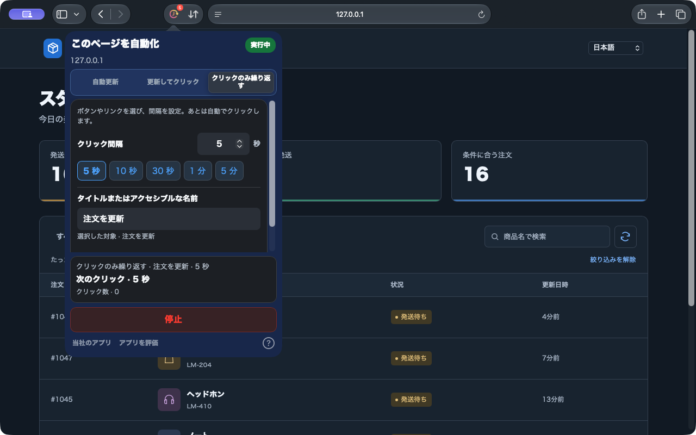

自動更新
プリセットまたは正確な間隔を指定して、在庫やステータスページを更新します。
iPhone・iPad・Mac の Safari と、デスクトップの Chrome に対応。
ページ全体を更新したいときも、ボタンだけ押したいときも。Auto Refresh & Clicker が Safari のウェブページで繰り返す操作をお手伝いします。
ブラウザ内で動作。アカウント登録は不要。
Safari 1.10.0 のプレビューです。新機能は公開準備中です。ストアで配信中のバージョンをご確認ください。Chrome 版は別途更新されます。
動作を見る


Mac 版 Safari 1.10.0 · ローカルデモページでの実際の画面
更新されるダッシュボードも、繰り返し押すボタンも。ページに合ったタスクを選べます。
プリセットまたは正確な間隔を指定して、在庫やステータスページを更新します。
ページ上でボタンやリンクを選ぶか、タイトルを入力。更新後は設定した順番と待機時間でクリックします。
ページを再読み込みせず、クリックだけ繰り返し。アイコンも選べます。間隔を決めてリストを更新しましょう。
簡単に設定でき、実行状態もすぐに確認できます。
インストール後にアプリを開き、Safari の設定で拡張機能とサイトへのアクセスを許可します。
モードを選び、間隔や各ステップの待ち時間を設定します。クリックするボタンやリンクは、ページ上で選ぶか、タイトルを入力できます。
開始後は実行状態とカウントダウンを確認。いつでも停止や変更の適用ができます。
Web アカウントは不要。設定はブラウザ内に保存し、タブごとにタスクを管理します。
iPhone・iPad では Safari を前面に保ってください。バックグラウンドや画面ロック中は、システムがタスクを一時停止する場合があります。
プライバシーSafari の Web ページまたはデスクトップ Chrome 拡張機能内で動作します。他のアプリやシステム画面は操作できません。
インストールしたアプリを一度開き、Safari の設定 → 機能拡張をご確認ください。Safari 15.4 以降をご利用ください。表示されない場合は、macOS、Safari、アプリのバージョンと入手元をサポートへお知らせください。
継続的なバックグラウンド動作は保証されません。iOS・iPadOS がタスクを一時停止する場合があるため、Safari を前面に保ってください。
現在の Safari 版では、設定を編集して変更を適用できます。タスクの概要で適用中の設定を確認し、停止ボタンで終了できます。
iPhone・iPad・Mac の Safari と、デスクトップの Chrome に対応。
最新の価格と互換性は各ストアでご確認ください。